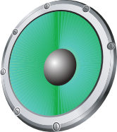

Lush Slider
A powerful component slider
powered by CSS3 and jQuery
A flexible slider
with better performance in animations
Embed videos directly
+
Youtube or Vimeo video
+
Fully responsive
+
Multiple configuration options

Let's get